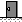

Introduzione
Il presente documento costituisce il manuale del software Centrale 3.
La consultazione può essere effettuata utilizzando l'indice generale, situato nella colonna di sinistra, oppure dall'interfaccia utente del software, utilizzando il bottone di help, per accedere direttamente alle informazioni del manuale relative alla pagina corrente.
Pagina iniziale
La pagina iniziale dell'interfaccia utente del software Centrale richiede unicamente l'inserimento della password di accesso, seguita da un click sul pulsante sottostante.
Nell'applicazione è possibile configurare due password, una per ottenere un accesso con funzionalità complete, l'altra per ottenere un accesso limitato alla sola consultazione.
Interfaccia utente
L'interfaccia utente del software Centrale 3 è un'interfaccia applicativa di tipo web, utilizzabile con un normale browser.
Essa presenta una barra superiore che consente di accedere direttamente alle pagine principali dell'interfaccia; queste sono raggruppate in due sezioni: configurazione e visualizzazione.
Per passare da una sezione all'altra occorre premere il relativo pulsante. In ogni pagina, vengono visualizzati i pulsanti di accesso diretto alle pagine della sezione corrente e, sul lato destro della barra, il pulsante per accedere all'altra sezione.
Il pulsante della pagina correntemente selezionata assume il colore di sfondo della pagina stessa, rendendo più evidente quale sia la pagina selezionata.
Configurazione delle stazioni
La pagina di configurazione delle stazioni è suddivisa in due schede: una consente di inserire in configurazione una nuova stazione, l'altra visualizza la lista delle stazioni attualmente esistenti.
Nuova stazione
Per inserire in configurazione una nuova stazione, è sufficiente premere il pulsante "Aggiungi una nuova stazione" per accedere alla pagina specifica di configurazione delle informazioni anagrafiche ad essa relative.
Lista stazioni
La lista delle stazioni visualizza l'elenco delle stazioni presenti in configurazione, consentendone la modifica e la cancellazione. Per ciascuna stazione vengono visualizzati:
- lo stato di abilitazione (verde: abilitato, grigio: disabilitato)
- il nome che identifica la stazione
- il pulsante di modifica
- il pulsante di cancellazione
Informazioni per la connessione e informazioni anagrafiche
La pagina di configurazione della stazione contiene due schede: la prima per la configurazione delle informazioni di connessione alla stazione e la seconda per la configurazione delle informazioni anagrafiche della stazione.
Informazioni per la connessione
La scheda di configurazione della connessione serve per la configurazione
della connessione verso la stazione.
La configurazione della connessione richiede che siano specificate obbligatoriamente le seguenti informazioni:
- nel caso di una nuova stazione, il nome breve della stessa
- lo stato di abilitazione
- l'indirizzo IP
- l'utilizzo o meno del modem per la connessione
- nel caso del modem, il numero di telefono
- l'abilitazione o meno allo scarico dei dati istantanei
Possono essere invece opzionalmente specificate le seguenti informazioni:
- la porta IP
- l'indirizzo IP del router
- la frequenza di polling da forzare per la stazione
- la data minima a partire dalla quale scaricare i dati
I pulsanti che sono visualizzati in fondo a questa prima scheda sono:
il pulsante di "Annulla" , che ripulisce le modifiche effettuate (e nel caso
di una nuova stazione fa tornare alla pagina di configurazione della lista
stazioni) e il pulsante che permette di scaricare le informazioni anagrafiche
dal software di stazione. Quando questo scarico è terminato, verrà
visualizzato un altro bottone, quello di "Salva", che permette di salvare sulla
Banca Dati del Centrale le informazioni anagrafiche scaricate dal software del
Periferico, nel caso in cui questo scarico sia avvenuto correttamente, e solo
le informazioni di connessione, nel caso in cui ci siano stati problemi nel
collegamento e/o nello scarico dal software di stazione.
, che ripulisce le modifiche effettuate (e nel caso
di una nuova stazione fa tornare alla pagina di configurazione della lista
stazioni) e il pulsante che permette di scaricare le informazioni anagrafiche
dal software di stazione. Quando questo scarico è terminato, verrà
visualizzato un altro bottone, quello di "Salva", che permette di salvare sulla
Banca Dati del Centrale le informazioni anagrafiche scaricate dal software del
Periferico, nel caso in cui questo scarico sia avvenuto correttamente, e solo
le informazioni di connessione, nel caso in cui ci siano stati problemi nel
collegamento e/o nello scarico dal software di stazione.
Informazioni anagrafiche
Le informazioni anagrafiche visualizzate in questa scheda sono quelle
scaricate dal software di stazione tramite il bottone di "Scarica dal periferico"
oppure, nel caso di modifica di una stazione già presente nella Banca
Dati in cui non si sia ancora premuto tale bottone, le informazioni presenti
nella Banca Dati del Centrale.
Queste informazioni non sono modificabili
dall'utente. I campi visualizzati sono i seguenti:
- nome breve
- descrizione
- ubicazione
- indirizzo
- città
- provincia
- utilizzo o meno del GPS
- note
Posizione stazioni sulla mappa
La pagina di configurazione della posizione delle stazioni è sulla mappa
è costituita dalla mappa della provincia sulla quale si possono posizionare
liberamente trascinandoli con il mouse i riquadri delle stazioni.
Le stazioni già
configurate sono disegnate sulla mappa nella posizione configurata in precedenza, mentre le
stazioni nuove si trovano in basso a sinistra fuori della mappa e devono essere posizionate
su di essa.
È inoltre presente in alto il bottone di "Salva", che permette di salvare le posizioni delle stazioni attualmente visualizzate sulla mappa nella Banca Dati del Centrale.
Informazioni di configurazione del Cop
La pagina di configurazione del Cop contiene tre schede: la prima per la configurazione delle informazioni relative al polling delle stazioni, la seconda per la configurazione avanzata del polling e la terza per la configurazione delle soglie per la temperatura.
Configurazione del polling
La scheda di configurazione del polling serve per stabilire le informazioni
per il polling di tutte le stazioni.
La configurazione del Cop richiede che siano specificate obbligatoriamente le seguenti informazioni:
- la frequenza del polling, in minuti
- l'informazione sull'utilizzo o meno della configurazione avanzata per il polling
- la configurazione dello scarico dei dati istantanei (disabilitata, tutti i dati istantanei, solo i dati istantanei di calibrazione)
- l'abilitazione allo scarico o meno dei dati degli allarmi di cabina e di analizzatore
- il massimo numero di linee disponibili
- il numero totale di modem
- il numero di modem con linea condivisa
- l'informazione se mantenere una linea riservata per chiamate dal periferico
- il timeout del router
- il timeout per i tentativi di connessione al router
- l'indirizzo IP del Cop
Configurazione avanzata del polling
Questa scheda viene visualizzata solo nel caso in cui l'utente abbia scelto nella scheda soprastante di abilitare la configurazione avanzata del polling. Questa scheda contiene le seguenti informazioni che opzionalmente l'utente può inserire:
- l'ora di apertura dell'ufficio
- l'ora di chiusura dell'ufficio
- l'informazione se l'ufficio è chiuso al sabato
- l'informazione se l'ufficio è chiuso alla domenica
- la frequenza del polling fuori dall'orario di ufficio, in minuti
Configurazione delle soglie per la temperatura
Questa scheda contiene le seguenti informazioni che opzionalmente l'utente può inserire, reltive alle soglie per la visualizzazione della temperatura rilevata nelle stazioni, nella pagina di visualizzazione della mappa:
- la soglia inferiore della temperatura, in gradi
- la soglia superiore di attenzione della temperatura, in gradi
- la soglia superiore di allarme della temperatura, in gradi
I pulsanti che sono visualizzati in fondo alla pagina sono: il pulsante di "Annulla", che ripulisce le modifiche effettuate e il pulsante di "Salva", che permette di salvare sulla Banca Dati del Centrale le informazioni di configurazione del Cop della pagina.
Associazione delle stazioni tra database
Associazione tra stazioni
La pagina di associazione stazione tra i database contiene due liste:
- lista delle stazioni configurate nel centrale
- lista stazioni presenti nel database esterno
Il pulsante di match tra le due liste consente di associare le due stazioni selezionate. Quando si schiaccia questo pulsante si accederà alla pagina di associazione sensori delle stazioni selezionate.
Elenco stazioni associate
La tabella presenta l'elenco delle stazioni associate che però
hanno ancora qualche sensore che non è stato associato.
Il pulsante modifica, accanto a ciascuna riga delle stazioni associate, consente di accedere alla pagina di associazione tra i sensori delle due stazioni associate.
Associazione dei sensori tra database
Associazione tra sensori
La pagina di associazione sensori tra i database contiene due liste:
- lista dei sensori configurati nel centrale per la stazione indicata
- lista sensori presenti nel database esterno per la stazione indicata
Il pulsante di match tra le due liste consente di associare i due sensori selezionati. Quando si schiaccia questo pulsante i due sensori scompariranno dalla lista.
Il pulsante indietro consente di accedere alla pagina di associazione stazioni.
Cancellazione collegamenti delle stazioni tra database
Cancellazione collegamento tra stazioni
Questa pagina contine una tabella contenente nelle colonne:
- lista delle stazioni del centrale collegate con
- lista stazioni presenti nel database esterno
- pulsante di cancellazione del collegamento
- pulsante per accedere alla cancellazione dei collegamanti tra i sensori
Cancellando il collegamanto tra due stazioni verranno automaticamente cancellati anche tutti i collegamenti tra i loro sensori.
Cancellazione collegamenti tra sensori
Cancellazione collegamento tra sensori
Questa pagina contine una tabella contenente nelle colonne:
- lista dei sensori della stazione selezionata del centrale collegate con
- lista dei sensori della stazione del database esterno
- pulsante di cancellazione del collegamento
Il pulsante indietro consente di tornare alla pagina di cancellazione collegamenti tra stazioni.
Configurazione comune - Gestione dimensioni fisiche
La pagina di configurazione delle dimensioni fisiche consente di creare nuove dimensioni fisiche e di cancellare quelle esistenti presenti nella tabella visualizzata.
Queste informazioni possono essere modificate soltanto da utenti con i privilegi di scrittura.
La creazione o la cancellazione di una dimensione fisica costituisce una modifica della configurazione comune, pertanto, al prossimo polling di ciascuna stazione, verrà inviata nuovamente ai periferici.
Nuova dimensione fisica
Per creare una nuova dimensione fisica inserire nella casella di testo il nome della dimensione fisica e schiacciare il pulsante "Nuovo". La lista sottostante verrà aggiornata con la nuova dimensione fisica appena creata
Dimensioni fisiche esistenti
In questa sezione viene mostrato l'elenco delle dimensioni fisiche esistenti, ciascuna con accanto un pulsante per la cancellazione; pertanto per cancellare è necessario schiacciare il pulsante "Cancella" accanto alla dimensione fisica che si desidera cancellare. Dopo la cancellazione, l'elenco verrà aggiornato.
Configurazione comune - Gestione Unità di misura
La pagina di configurazione delle unità di misura consente di creare nuove Unità di misura, di modificare e cancellare quelle esistenti presenti nella tabella visualizzata.
Queste informazioni possono essere modificate soltanto da utenti con i privilegi di scrittura.
La creazione, la modifica o la cancellazione di una unità di misura costituisce una modifica della configurazione comune, pertanto, al prossimo polling di ciascuna stazione, verrà inviata nuovamente ai periferici.
Nuova unità di misura
Per creare una nuova unità di misura schiacciare il pulsante "Nuovo". Si apriraà una nuova pagina con le informazioni da inserire relative all'unità di misura.
I campi "Nome unità di misura" e "Descrizione" sono contrassegnati dall'asterisco pertanto sono obbligatori.
Il campo "Formula di conversione" può assumere due soli valori:
- Nessuna: non viene applicata nessuna formula
- vv2mpv: formula che prevede la trasformazione da volume/volume a massa per volume
Per salvare le informazioni schiacciare il pulsante "Salva".
Per resettare tutti i campi schiacciare il pulsante "Azzera campi".
Attenzione: se non esistono dimensioni fisiche configurate, si verrà indirizzati alla pagina di creazione delle dimensioni fisiche.
Unitaà di misura esistenti
In questa sezione viene mostrato l'elenco delle unitaà di misura esistenti, ciascuna con accanto un pulsante per la modifica e la cancellazione.
Per modificare è necessario schiacciare il pulsante "Modifica" accanto all'unitaà di misura che si desidera modificare. Si apriraà una nuova pagina con le informazioni relative all'unità di misura. Per la modifica dei campi preocedere come per la creazione di una nuova unità di misura.
Per cancellare è necessario schiacciare il pulsante "Cancella" accanto all'unitaà di misura che si desidera cancellare. Dopo la cancellazione, l'elenco verrà aggiornato.
Configurazione comune - Gestione parametri
La pagina di configurazione dei parametri consente di creare nuovi parametri, di modificare e cancellare quelle esistenti presenti nella tabella visualizzata.
Queste informazioni possono essere modificate soltanto da utenti con i privilegi di scrittura.
La creazione, la modifica o la cancellazione di un parametro costituisce una modifica della configurazione comune, pertanto, al prossimo polling di ciascuna stazione, verrà inviata nuovamente ai periferici.
Nuovo parametro
Per creare una nuovo parametro schiacciare il pulsante "Nuovo". Si apriraà una nuova pagina con le informazioni da inserire relative al parametro.
I campi "Id parametro" e "Nome" sono contrassegnati dall'asterisco pertanto sono obbligatori.
Per salvare le informazioni schiacciare il pulsante "Salva".
Per resettare tutti i campi schiacciare il pulsante "Azzera campi".
Attenzione: se non esistono dimensioni fisiche configurate, si verrà indirizzati alla pagina di creazione delle dimensioni fisiche.
Parametri esistenti
In questa sezione viene mostrato l'elenco dei parametri esistenti, ciascuna con accanto un pulsante per la modifica e la cancellazione.
Per modificare è necessario schiacciare il pulsante "Modifica" accanto al parametro che si desidera modificare. Si apriraà una nuova pagina con le informazioni relative al parametro. Per la modifica dei campi preocedere come per la creazione di un nuovo parametro.
Per cancellare è necessario schiacciare il pulsante "Cancella" accanto al parametro che si desidera cancellare. Dopo la cancellazione, l'elenco verrà aggiornato.
Configurazione comune - Gestione nomi allarmi
La pagina di configurazione dei nomi allarmi consente di creare nuovi nomi allarmi, di modificare e cancellare quelle esistenti presenti nella tabella visualizzata.
Queste informazioni possono essere modificate soltanto da utenti con i privilegi di scrittura.
La creazione, la modifica o la cancellazione di un parametro costituisce una modifica della configurazione comune, pertanto, al prossimo polling di ciascuna stazione, verrà inviata nuovamente ai periferici.
Nuovo nome allarme
Per creare un nuovo nome allarme schiacciare il pulsante "Nuovo". Si apriraà una nuova pagina con le informazioni da inserire relative al nome allarme.
I campi "Id allarme" e "Nome allarme" sono contrassegnati dall'asterisco pertanto sono obbligatori.
Per salvare le informazioni schiacciare il pulsante "Salva".
Per resettare tutti i campi schiacciare il pulsante "Azzera campi".
Nomi allarmi esistenti
In questa sezione viene mostrato l'elenco dei nomi allarmi esistenti, ciascuna con accanto un pulsante per la modifica e la cancellazione.
Per modificare è necessario schiacciare il pulsante "Modifica" accanto al nome allarme che si desidera modificare. Si apriraà una nuova pagina con le informazioni relative al nome allarme. Per la modifica dei campi preocedere come per la creazione di un nuovo parametro.
Per cancellare è necessario schiacciare il pulsante "Cancella" accanto al nome allarme che si desidera cancellare. Dopo la cancellazione, l'elenco verrà aggiornato.
Configurazione comune - Gestione altre informazioni
Queste informazioni possono essere modificate soltanto da utenti con i privilegi di scrittura.
La modifica di ciascuna delle seguenti inofrmazioni costituisce una modifica della configurazione comune, pertanto, al prossimo polling di ciascuna stazione, verrà inviata nuovamente ai periferici.
Periodo di mediazione
Per creare un nuovo periodo di mediazione inserire nell'apposita casella di testo il valore e schiacciare il pulsante "Nuovo". Si aggiornerà la tabella sottostante con il nuovo periodo di mediazione appena inserito.
Per impostare un periodo di mediazione di default selezionarne uno; una finestra di dialogo chiederà conferma dell√¨'operazione.
Per cancellare un periodo di mediazione schiacciare i lpulsante "Cancella" accanto al periodo di mediazione desiderato.
Gestione arcivio
Inserire nelle caselle di testo le informazioni.Per salvare i campi relativi alla gestione archivio schiacciare il pulsante "salva"; per resettare i campi della gestione archivio schiacciare il pulsante "Azzera campi".
Standard
Inserire nelle caselle di testo le informazioni. Per salvare i campi relativi a standard schiacciare il pulsante "salva"; per resettare i campi di standard schiacciare il pulsante "Azzera campi".
Altre informazioni
Inserire nelle caselle di testo le informazioni. Per salvare i campi relativi alle altrre informazioni schiacciare il pulsante "salva"; per resettare i campi di altre informazioni schiacciare il pulsante "Azzera campi".
Configurazione modem
La pagina di configurazione modem consente di creare nuovi modem, di modificare e cancellare quelle esistenti presenti nella tabella visualizzata.
Queste informazioni possono essere modificate soltanto da utenti con i privilegi di scrittura.
Nuovo modem
Per creare un nuovo modem schiacciare il pulsante "Nuovo". Si apriraà una nuova pagina con le informazioni da inserire relative al modem.
Il campi "Id modem"è contrassegnato dall'asterisco pertanto è obbligatorio.
Per salvare le informazioni schiacciare il pulsante "Salva".
Per resettare tutti i campi schiacciare il pulsante "Azzera campi".
Configurazioni modem esistenti
In questa sezione viene mostrato l'elenco dei modem esistenti, ciascuno con accanto un pulsante per la modifica e la cancellazione.
Per modificare è necessario schiacciare il pulsante "Modifica" accanto al modem che si desidera modificare. Si apriraà una nuova pagina con le informazioni relative al modem. Per la modifica dei campi preocedere come per la creazione di un nuovo modem.
Per cancellare è necessario schiacciare il pulsante "Cancella" accanto al modem che si desidera cancellare. Dopo la cancellazione, l'elenco verrà aggiornato.
Visualizzazione della mappa
La pagina di visualizzazione dello stato del polling delle stazioni sulla mappa è costituita dalla mappa della provincia sulla quale sono posizionati i riquadri delle stazioni.
Nel riquadro di ogni singola stazione sono visualizzate in modo sintetico le seguenti informazioni relative allo stato di polling della stazione stessa:
- il nome breve della stazione
- la data e l'ora dell'ultimo polling avvenuto correttamente
- il valore della temperatura della stazione, ove presente
- l'icona relativa allo stato di comunicazione
- l'icona relativa allo stato informatico
- l'icona relativa agli allarmi di cabina e di analizzatore
- l'icona relativa alla sincronizzazione della stazione
- l'icona relativa allo stato dell'allarme porta, ove presente
In particolare, ogni icona può assumere diversi aspetti, in modo da segnalare lo stato attuale
di quella informazione. Qui di seguito ne viene data una breve descrizione per ognuna di esse.
Per quanto rigurada l'icona relativa allo stato di comunicazione, essa può assumere i
seguenti stati:
- stato sconosciuto
- chiamata verso il router di stazione in corso
- errore di comunicazione con il router remoto
- errore di comunicazione con il router locale
- errore di comunicazione con il pc di stazione
- dialogo tra applicazioni in corso
- polling terminato correttamente
- il software di stazione non risponde o errore fatale di protocollo
- linea interrotta
Per quanto riguarda l'icona relativa allo stato informatico del Periferico, essa può assumere i seguenti stati:
- stato sconosciuto
- stato informatico corretto
- stato informatico con errori
 stato informatico con warning
stato informatico con warning
Per quanto riguarda l'icona relativa agli allarmi di cabina e di analizzatore, essa può assumere i seguenti stati:
- stato sconosciuto
 nessun allarme di analizzatore o di cabina
nessun allarme di analizzatore o di cabina- almeno un allarme attivo di analizzatore o di cabina
Per quanto riguarda l'icona relativa alla sincronizzazione della stazione, essa può assumere i seguenti stati:
- stato sconosciuto
- stazione sincronizzata
- sincronizzazione fallita, ma ora della stazione corretta entro i limiti prestabiliti
- sincronizzazione fallita, con ora della stazione errata rispetto ai limiti prestabiliti
Per quanto riguarda l'icona relativa allo stato dell'allarme porta, essa può assumere i seguenti stati:
-  stato sconosciuto
- porta chiusa
- porta aperta
Inoltre, cliccando con il tasto sinistro del mouse nel riquadro di una stazione, si passa alla pagina
di visualizzazione degli allarmi degli analizzatori.
Cliccando invece con il tasto destro del mouse nel riquadro di una stazione, si apre un menu a tendina
a destra che permette di eseguire le seguenti operazioni:
- Esegui polling: esegue immediatamente un polling sulla singola stazione
- Configura la stazione: porta direttamente alla pagina di configurazione della stazione
- Apri l'interfaccia grafica della stazione: apre un popup in cui si collega all'interfaccia grafica del Periferico
Nella pagina in alto a destra è inoltre presente un bottone che permette di far partire un polling immediato di tutte le stazioni.
Stato informatico
Questa pagina visualizza le informazioni relative allo stato informatico
della stazione selezionata, ovvero al corretto funzionamento della stessa.
Tali informazioni sono raggruppate in tre sezioni:
Stato del software Periferico
Lo stato del software Periferico viene riassunto tramite un indicatore che
rappresenta lo stato globale del software: se il funzionamento è
regolare l'indicatore è di colore verde, altrimenti è di colore
rosso; in tal caso occorre rivolgersi all'assistenza per la soluzione del
problema.
Le informazioni di dettaglio sullo stato dell'applicazione sono
così raggruppate:
- Stato delle schede di acquisizione
- Stato delle configurazioni
- Stato dei servizi applicativi
Stato delle schede di acquisizione
Le informazioni visualizzate sono:
- lo stato di inizializzazione della libreria che gestisce le schede di acquisizione
- il numero di schede presenti in configurazione e il numero di schede correttamente inizializzate
- il numero di associazioni fallite tra i canali delle schede e i loro utilizzatori
Stato delle configurazioni
Le informazioni visualizzate sono:
- lo stato di caricamento della configurazione, che può essere: mancante, corrotta, errata oppure corretta
- la riuscita del salvataggio di una nuova configurazione; se non è ancora stata salvata una configurazione dopo l'avvio dell'applicazione l'indicatore di stato è di colore grigio
- lo stato di attivazione della configurazione attuale che può essere: attiva (verde), non attiva (rosso), non disponibile (grigio, caso in cui la configurazione non è stata caricata)
Stato dei servizi applicativi
Questa scheda visualizza lo stato di funzionamento dei servizi che costituiscono parte integrante del software Periferico stesso:
- driver degli analizzatori con interfaccia dati: numero di driver utilizzati, numero di driver inizializzati correttamente, numero di driver bloccati da un errore fatale; il funzionamento è regolare quando il numero di driver inizializzati correttamente è uguale a quello di driver utilizzati e non vi sono driver bloccati
- numero di errori avvenuti durante la scrittura dei dati su disco
- numero di errori dei servizi applicativi: totali, dall'avvio dell'applicazione, indicatore giallo se > 0, attuali, ovvero il cui effetto condiziona ancora l'applicazione, indicatore rosso se > 0; l'indicatore è verde se non vi sono errori.
Stato dei dischi
Questa sezione visualizza la percentuale di spazio disco occupato nei filesystem che ospitano rispettivamente le cartelle contenenti:
- il sistema operativo (disco root)
- i dati dell'applicazione (disco data)
- le informazioni temporanee (disco tmp)
In condizioni normali la percentuale di spazio disco occupato è
associata ad un'icona di colore verde. Quando la parcentuale supera la
soglia di attenzione l'icona assume il colore giallo, quando supera la
soglia di allarme assume il colore rosso.
Il software Periferico usa
come soglie di attenzione e di allarme predefinite rispettivamente 80% e
90%. Tali soglie possono essere cambiate agendo sulla configurazione
globale della rete di rilevamento.
Nota: una o più percentuali possono essere permanentemente uguali tra loro, questo significa che le cartelle a cui esse si riferiscono si trovano nello stesso filesystem; tale situazione si può verificare in alcune tipologie di installazione.
Stato del gps
Questa sezione visualizza lo stato del sistema GPS.
Nel caso in cui
la configurazione di stazione non preveda l'uso del GPS, viene visualizzato
unicamente un indicatore di colore grigio con la scritta
"GPS non installato".
Nel caso in cui la configurazione di stazione
preveda l'utlizzo del GPS, viene visualizzato un indicatore di colore verde
con la scritta "GPS installato", unitamente alle informazioni sullo stato
del dispositivo e della localizzazione.
Le informazioni relative allo stato del dispositivo prevedono un
indicatore verde, nel caso in cui risulta possibile acquisire la posizione,
e un indicatore rosso, in caso contrario.
L'indicatore di colore verde
è associato all'informazione del tipo di localizzazione ottenuta che
può essere bidimensionale o tridimensionale.
Unitamente
all'indicatore di colore rosso viene visualizzata la descrizione del
problema che impedisce la localizzazione; i possibili problemi sono:
- il driver del GPS non risponde
- il dispositivo GPS non è stato rilevato
- il GPS non riceve il segnale
Quando la localizzazione è possibile, vengono visualizzate le informazioni ad essa relative: data, latitudine, longitudine e altitudine (quest'ultima solo nel caso di localizzazione tridimensionale).
Comunicazione
Questa sezione visualizza lo stato della comunicazione. Gli stati possibili sono i seguenti:
- l'ultima comunicazione con la stazione è avvenuta in modo regolare
- il software di stazione non risponde o è bloccato
- il pc di stazione non è raggiungibile, potrebbe essere spento o bloccato
- il router locale non è raggiungibile, potrebbe esserci un guasto al router
- il router remoto non è raggiungibile, potrebbe esserci un problema alle linee telefoniche oppure la cabina potrebbe esssere senza alimentazione elettrica.
Nella pagina in alto a destra, sono inoltre presenti due pulsanti, che permettono di accedere rispettivamente alla pagina di visualizzazione dello stato degli allarmi di analizzatore e alla pagina di visualizzazione dello stato degli allarmi della stazione.
Stato stazione
Questa pagina visualizza lo stato della stazione selezionata, sotto forma di una
tabella contenente l'elenco degli allarmi di cabina.
Per ciascun allarme
di cabina vengono visualizzati il nome, la descrizione, lo stato e la data
dell'ultima variazione dello stato.
La prima colonna della tabella
contiene, per ciascun allarme, un pulsante che consente di consultare lo
storico degli stati.
Per gli allarmi di tipo binario viene visualizzato un indicatore di colore rosso quando l'allarme è attivo, di colore verde quando l'allarme non è attivo.
Per gli allarmi di tipo analogico, in base allo stato di superamento delle soglie, possono essere visualizzate le seguenti icone:
 : superamento della soglia superiore di allarme
: superamento della soglia superiore di allarme- : superamento della soglia superiore di attenzione
 : situazione regolare
: situazione regolare : valore al di sotto della soglia inferiore di attenzione
: valore al di sotto della soglia inferiore di attenzione- : valore al di sotto della soglia inferiore di allarme
Per la consultazione dello storico degli stati degli allarmi si deve
utilizzare il pulsante presente nella prima colonna della tabella, relativo
all'allarme di cabina per cui si vuole effettuare la consultazione.
Per
effettuare la consultazione vengono richieste le seguenti informazioni:
- data inizio (default: giorno corrente)
- ora inizio (default: 00:00)
- data fine (default: giorno corrente)
- ora fine (default: ora attuale)
Nella pagina in alto a destra, sono inoltre presenti due pulsanti, che permettono di accedere rispettivamente alla pagina di visualizzazione dello stato degli allarmi di analizzatore e alla pagina di visualizzazione dello stato informatico della stazione.
Storico degli allarmi di cabina
Questa pagina visualizza una tabella contenente l'elenco degli stati storici degli allarmi di cabina, in base alla richiesta effettuata nella pagina di stato stazione.
Le informazioni contenute nella tabella sono, per ciascuna variazione dello stato: data e ora in cui è avvenuta la variazione dello stato, valore dello stato.
Stato analizzatori
Questa pagina visualizza una tabella contenente l'elenco degli
analizzatori presenti nella stazione di misura selezionata.
Per ciascun analizzatore
vengono visualizzati il nome, la marca e il modello nonché le
informazioni di stato correnti.
La prima colonna della tabella contiene,
per ciascun analizzatore, un pulsante che consente di consultare lo storico
degli stati degli analizzatori.
Le informazioni di stato visualizzate sono:
- Stato del segnale di allarme dell'analizzatore:
- verde: funzionamento regolare
- rosso: allarme attivo
- grigio: informazione non disponibile
- Stato di manutenzione in corso:
- giallo: attivo
- grigio: non attivo
- Stato di calibrazione manuale in corso:
- giallo: attivo
- grigio: non attivo
- Stato di calibrazione automatica in corso: predisposizione per implementazioni future
- stato di calibrazione automatica fallita: predisposizione per implementazioni future
Per la consultazione dello storico degli stati degli analizzatori si deve
utilizzare il pulsante presente nella prima colonna della tabella, relativo
all'analizzatore per cui si vuole effettuare la consultazione.
Per
effettuare la consultazione vengono richieste le seguenti informazioni:
- data inizio (default: giorno corrente)
- ora inizio (default: 00:00)
- data fine (default: giorno corrente)
- ora fine (default: ora attuale)
- stato da consultare:
- fault: allarme dell'analizzatore
- maintenance: manutenzione
- man_calib: calibrazione manuale
- achk_run: calibrazione automatica
- achk_fail: calibrazione automatica fallita
Nella pagina in alto a destra, sono inoltre presenti due pulsanti, che permettono di accedere rispettivamente alla pagina di visualizzazione dello stato informatico della stazione e alla pagina di visualizzazione dello stato degli allarmi di stazione.
Storico degli stati
Questa pagina visualizza una tabella contenente l'elenco degli stati storici, in base alla richiesta effettuata nella pagina di stato degli analizzatori.
Le informazioni contenute nella tabella sono, per ciascuna variazione dello stato: data e ora in cui è avvenuta la variazione dello stato, valore dello stato.
Consultazione dati
La pagina per la scelta della stazione per la quale si intendono consultare
i dati memorizzati nella Banca Dati del centrale, presenta semplicemente una scheda.
In questa scheda è contenuta una tendina per la scelta della stazione ed
il pulsante per accedere alla pagina di visualizzazione delle ultime medie relative
alla stazione selezionata.
Visualizzazione ultime medie di una stazione
Questa pagina visualizza una tabella contenente l'elenco di tutti gli elementi misurati dalla stazione per i diversi periodi di mediazione, al fine di poter effettuare la consultazione dei valori delle ultime medie acquisite dalla stazione stessa.
Per ciascun elemento viene visualizzato l'ultimo valore di media acquisito comprensivo di unità di misura, data e ora di acquisizione, dei flag e del periodo di mediazione. Tale dato viene aggiornato quando si entra nella pagina e ogni volta che viene premuto il pulsante di refresh .
La consultazione dello storico dei dati istantanei e delle medie memorizzati nella Banca Dati del Centrale può essere effettuata utilizzando gli appositi pulsanti situati nelle prime due colonne della tabella. Sia per i dati istantanei che per le medie è possibile effettuare la visualizzazione in forma tabellare oppure grafica; è inoltre possibile lo scarico dei dati in formato csv.
Tabella delle medie
La tabella delle medie visualizza, per l'elemento, il periodo di mediazione ed l'intervallo di tempo selezionati, le seguenti informazioni:
- valore
- unità di misura
- data
- flag di validità
- flag multiplo (rappresenta le condizioni in cui i dati sono stati acquisiti)
Nella pagina in alto a destra è inoltre presente un bottone di "Indietro" che permette di tornare alla pagina di visualizzazione delle ultime medie della stazione.
Tabella dei dati istantanei
La tabella dei dati istantanei visualizza i dati istantanei che eventualmente
(ovvero nel caso in cui il Centrale sia stato configurato in tal senso)
sono stati scaricati dalla stazione selezionata.
Tale tabella visualizza, per l'elemento ed il periodo selezionati, le seguenti informazioni:
- valore
- unità di misura
- data
- flag di validità
- flag multiplo (rappresenta le condizioni in cui i dati sono stati acquisiti)
Nella pagina in alto a destra è inoltre presente un bottone di "Indietro" che permette di tornare alla pagina di visualizzazione delle ultime medie della stazione.